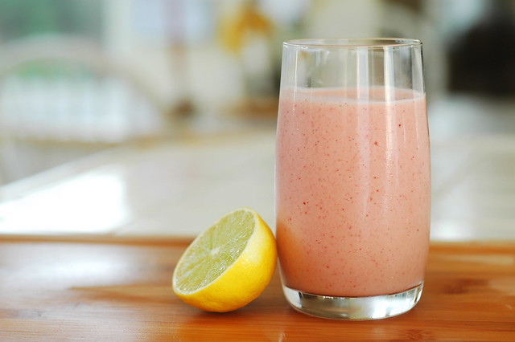

Greek Yogurt Smoothie

photo by:John Watson
A simple smoothie that anyone can make and enjoy
Looking to lose weight? Want to try a snack that is filling and easy to make?
This delicious, classic smoothie is filled with plenty of fiber and protein to make for a filling snack to aid in your weight loss journey.
This simple to make smoothie is a must for anyone wanting to try their hand at smoothie making!
Ingredients Needed:
- 1 cup whole frozen strawberries
- 1 medium ripe banana
- 3/4 cup nonfat plain Greek yogurt
- 2 tablespoons oatmeal
- 1 tablespoon peanut butter or almond butter
- 1-2 teaspoons honey
- Water or milk of choice (as needed)
- Ice (optional)
Steps:
- Place oats in blender and pulse until finely ground
- Cut the banana into chunks then add to blender along with the strawberries, greek yogurt, peanut butter, and honey
- Blend until you have a smooth texture
- Taste and add honey or ice as desired
- Enjoy!
Greek Yogurt Smoothie recipe by Well Plated